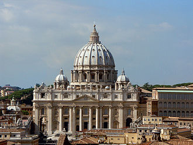
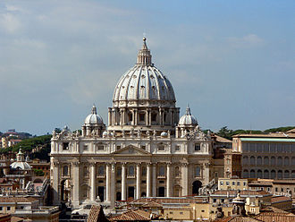

Vacantele de vis
Pentru mine vacantele cu familia înseamnă libertate,atunci cînd mă simt cel mai bine ,pentru familia noastra e lege să mergem în vacanțe de cel puțin 4 ori pe an.
Pentru ca să descoperim frumusetile pamăntului e necesar să mergem în vacanțe și să descoperim minunățiile lumii.
| Locuri de vis | |
|---|---|
| Marea Caraibelor | Informatii |
| Regiunea ocupată de mare, împreună cu insulele aflate în aceasta și zonele de coastă învecinate sunt cunoscute sub denumirea de Caraibe.Are o adâncime medie de 2491 de metri și cea maximă de 7238 m. Reciful de corali poate fi format din sute de specii diferite de corali. Există trei tipuri de corali: coralii duri , coralii moi (soft corals) și o combinație între cei duri și cei moi. Coralii se prezintă în multe forme și dimensiuni, fiecare coral fiind compus din mici polipi individuali. | |
| Italia | Informatii |
| Italia are un stil arhitectonic foarte larg și divers, ce nu poate fi clasificat doar după perioadă, ci și după regiune, având în vedere divizarea Italiei în mai multe state regionale până la 1861. Aceasta a creat o diversitate și un eclectism a designului arhitectural. Italia este cunoscută pentru considerabilele realizări din arhitectură, cum ar fi construcția de arcuri, domuri și structuri similare în Roma Antică, fondarea mișcării renascentiste în arhitectură între sfârșitul secolului al XIV-lea și secolul al XVI-lea, a cărei origini îi este atribuită lui Filippo Brunelleschi | |
| Bali | Informatii |
| îmi doresc mult să ajung în Bali pentru a explora jungla și pentru a vedea niste lucruri cu adevărat miraculoase. |
Beneficiile călătoritului
- Te ajută să te relaxezi după luni lungi de muncă
- Îți crește nivelul de creativitate
- Poți cunoaște noi prieteni și să descoperi culturi noi.
- Te ajută să capeți noi amintiri frumoase
- S-a dovedit științific că călătoritul reduce starea de depresie sau anxietate.
 

Cea mai scumpa regiune de odihnă
Cum ar fi sa navighezi la bordul propriului tau iaht? Andreas L. pus la dispozitie de compania Liveras Yachts, este un iaht Benetti, lung de 60 de metri, cu trei punti distincte, unde poti servi cina sau sta la soare, pe care ai Jacuzzi si sali de gimnastica si masaj, prevazute cu aer conditionat. Exista spatiu pentru pana la 12 persoane, personalul de la bord fiind alcatuit din 15 oameni. Ce e cel mai bine este faptul ca tu alegi itinerariul. Dar toate astea costa. In timpul sezonului de vara, pentru o saptamana la bordul acestei ambarcatiuni vei plati 315.000 euro.De exemplu, exista Insula Necker, apartinand Insulelor Virgine din Caraibe, detinuta de Sir Richard Branson, fondatorul companiei Virgin. Vei fi coplesit de numarul personalului, in timp ce te bucuri de gradina interioara, de pavilionul plutitor unde poti servi cina – sau daca te imbraci la patru ace – poti servi masa in salonul privat, unde totul e din argint, dantela, satin si cristal. Preturile pornesc de la 322.000 dolari pentru 7 nopti.
Una din favoritele celor cu bani – Sky Villa apartinand lui Hugh Hefner, aflata in Palms Hotel in Las Vegas! Cine n-ar vrea sa traiasca precum disparutului boss de la Playboy? Pentru 40.000 de dolari pe noapte, te poti bucura de doua etaje numai ale tale, in care incap cu usurinta 250 de oameni. Ai sala proprie de gimnastica echipata cu tot ce trebuie, cada “extra large”, bar, Jacuzzi, sala media, salon pentru dineuri, masa de poker, lift privat si pat “king size” cu oglinzi pe tavan.